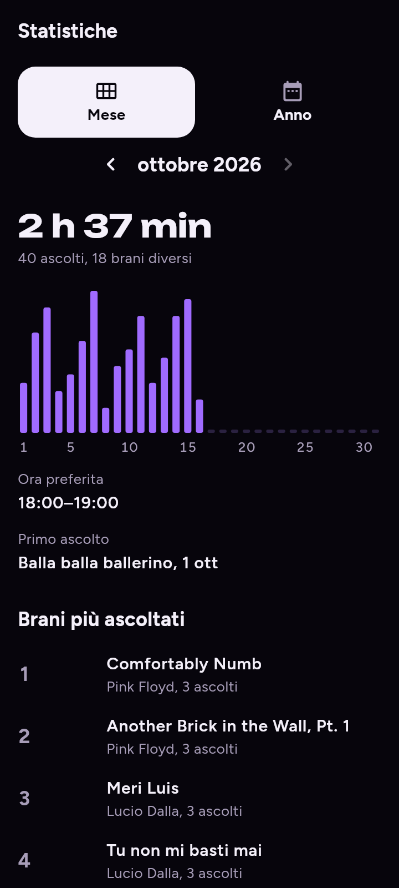

Dopo: D-362 etichetta sopra la barra toccata, D-363 mese di ritorno, skeleton al cambio periodo. Stile di ui-fluida, dati di esempio.

Barre non toccabili (un solo CustomPaint, F-11). Da Anno a Mese si riparte da gennaio (F-64). Al cambio periodo compare uno spinner (F-65).